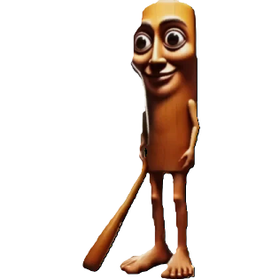

Indonesian Brainrot character
Tung Tung Tung Sahur is an anthropomorphic wooden Kentongan Drum or Tungsten, common on the Indonesian island of Java, Tung Tung Tung Sahur wields a baseball bat as a weapon; its face is similar to a Thomas and Friends Locomotive or the Aoni. In the background of the original image, he is located in a traditional Indonesian patrol post, the sign "Pos Ronda" is translated from Indonesian as "Patrol post", the setting is at night, dimly lit by an orange-tinged street lamp.
Sahur